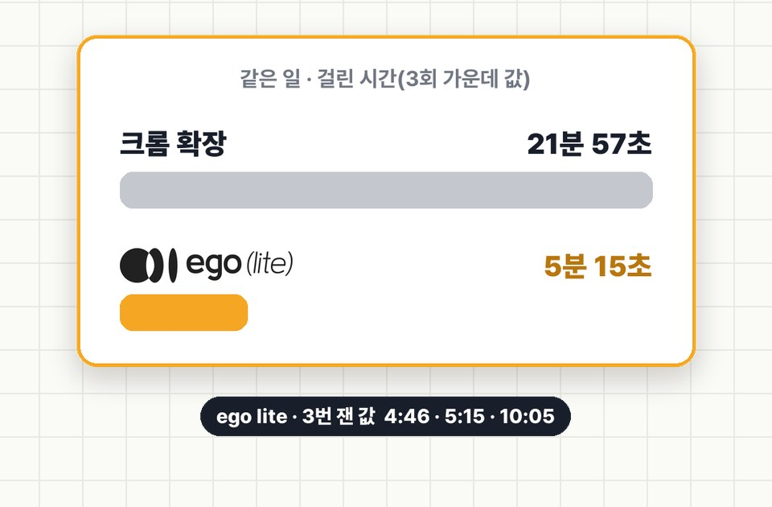

EP.23 · AI 브라우저
같은 AI, 같은 일인데
같은 AI, 같은 일인데
22분 vs 5분
AI한테 브라우저 일을 시켜 놓고 기다리다, 결국 직접 하신 적 있죠. 경쟁사 리뷰 150개를 모아 표로 만드는 일을 같은 AI · 같은 요청으로 크롬 확장과 ego lite에 번갈아 3번씩 시켜 봤어요. 가운데 값은 21분 57초 vs 5분 15초였고, 모은 리뷰는 둘 다 150개였어요.
016번 잰 기록
회차마다 새 대화(같은 Claude 모델)에 아래 02의 요청문을 그대로 줬어요. 다른 건 "어느 브라우저로" 한 줄뿐이에요. 순서는 크롬 확장 → ego lite → 크롬 확장 …으로 번갈아 했어요. 시간은 AI가 브라우저를 처음 쓰기 직전부터 표를 저장할 때까지예요(요청 쓰는 시간 제외).
21분 57초크롬 확장 · 3번의 가운데 값
5분 15초ego lite · 3번의 가운데 값
| 회차 | 브라우저 | 걸린 시간 | 모은 리뷰 | 메모 |
|---|---|---|---|---|
| 1 | 크롬 확장 | 21분 57초 | 150 | 호출 절반쯤이 연결 오류로 거절돼 다시 보냄 |
| 2 | ego lite | 5분 15초 | 150 | 막힌 곳 없음 |
| 3 | 크롬 확장 | 19분 25초 | 150 | 연결 오류 재전송 · 탭이 뒤에 있어 목록이 안 그려짐 |
| 4 | ego lite | 4분 46초 | 150 | 막힌 곳 없음 |
| 5 | 크롬 확장 | 26분 50초 | 150 | 크롬을 다시 켠 뒤에도 연결 오류 재전송(첫 시도는 0개로 멈춰서 다시 돌림) |
| 6 | ego lite | 10분 5초 | 150 | 막힌 곳 없음(첫 시도는 사용량 한도로 멈춰서 다시 돌림) |
- 결과가 덜 나온 쪽이 빨랐던 게 아니에요. 회차끼리 모은 리뷰 원문을 맞춰 봤더니 같은 페이지 · 같은 정렬의 리뷰였어요.
- 짝끼리 보면 차이는 4.2배 · 4.1배 · 2.7배로 회차마다 달랐어요.
- 차이가 난 이유는 이렇게 보여요. 크롬 확장은 한 번에 한 동작씩 AI와 주고받고, ego lite는 클릭 여러 번을 한 번에 묶어서 처리해요. 이번엔 크롬 확장 쪽에 연결 오류도 겹쳤어요.

02같은 요청문
실험에 쓴 요청문 그대로예요. 파일 경로 줄만 빼고, 상품만 바꿔서 쓰면 돼요.
복사해서 AI에 붙이기(상품 · 브라우저 줄만 바꿔요)
허니 뷰티(가상 브랜드) 마케터예요. 경쟁 히알루론산 세럼·앰플 3개의 쇼핑몰 리뷰를 모아 표로 정리해 주세요. 상품: 1. 올리브영 · 토리든 다이브인 저분자 히알루론산 세럼: (상품 주소) 2. 무신사 · 웰라쥬 리얼 히알루로닉 블루 100 앰플: (상품 주소) 3. 컬리 · 토니모리 원더 히알루론산 촉촉 앰플: (상품 주소) 할 일: - 상품마다 리뷰 50개씩(총 150개) 본문을 모아요. 순서는 페이지 기본 정렬 그대로. - 상품별로 장점 · 불만 · 자주 나온 말(각 3~5개, 몇 번 나왔는지 같이)을 정리한 표를 만들어요. 브라우저: ego lite(ego-browser 스킬)로 작업해요. 규칙: - 리뷰는 위 브라우저로만 모아요. - 로그인·가입·구매·글쓰기는 하지 않아요. 로그인이 필요하면 거기서 멈추고 적어요. - 끝나면 상품별로 모은 리뷰 수와 막힌 곳만 짧게 알려 주세요.
크롬 확장으로 잴 때는 브라우저 줄만 "Claude in Chrome(크롬 확장)으로 작업해요. 새 탭에서만 열고 다른 탭은 건드리지 말고, 끝나면 연 탭을 닫아요."로 바꿨어요.
실제로 나온 표(2회차 · ego lite)
| 토리든(올리브영) | 웰라쥬(무신사) | 토니모리(컬리) | |
|---|---|---|---|
| 장점 | 촉촉·수분 29 · 가볍고 산뜻 17 | 촉촉·보습 26 · 흡수 빠름 20 | 촉촉함 24 · 가성비 19 |
| 불만 | 건성·겨울엔 보습 부족, 크림 필수 7 | 혼자 쓰면 부족 → 크림 필요 5 | 건조할 땐 크림 덧발라야 2 |
| 자주 나온 말 | 수분 26 · 촉촉 14 · 흡수 12 | 제형 22 · 촉촉 21 · 흡수 20 | 촉촉 20 · 수분 9 · 가성비 8 |
숫자는 그 말을 한 리뷰 수예요(50개 중). 세 상품 공통 불만은 "건성 · 겨울엔 이것만으론 보습이 부족해요"였어요.
03마케터가 자주 시키는 브라우저 일
이번에 잰 건 1번 하나예요. 나머지는 같은 방식으로 맡길 수 있는 일이에요.
| 일 | 요청할 때 한 줄 더 |
|---|---|
| 1. 경쟁사 리뷰 모아 표로 (이번 실험) | "순서는 페이지 기본 정렬 그대로, 몇 개 모았는지 상품별로 알려 줘." |
| 2. 경쟁사 상세페이지 · 가격 · 프로모션 비교 | "가격은 정가 · 할인가 · 쿠폰 따로 적고, 확인한 시각도 같이." |
| 3. 광고 관리 화면 돌며 어제 성과 숫자 모으기 | "읽기만 하고 아무것도 바꾸지 마." |
| 4. 검색광고 키워드 등록 초안 | "저장 · 게시 버튼은 누르지 말고, 누르기 직전 화면에서 멈춰." |
04써 보기 전에 알아 둘 점
- 크롬 확장 쪽 시간에는 연결 오류가 들어 있어요. 이날 이 맥에서는 크롬 확장 호출의 절반쯤이 "그룹에 없는 탭" 오류로 거절돼서 AI가 다시 보냈어요. 크롬을 다시 켠 뒤에도 같았어요. 연결이 깨끗한 환경이면 차이가 줄 수 있어요.
- 제 컴퓨터 한 대 · 한 가지 일 · 3번씩 잰 값이에요. 일의 종류 · 사이트 · 시간대에 따라 달라져요.
- ego lite는 따로 설치하는 브라우저예요(lite.ego.app · Mac용, 공식 사이트 비교표에 '무료'로 나와요 · 2026-10-31 확인). 크롬과 로그인이 따로라, 로그인이 필요한 사이트는 ego lite에서 한 번 로그인해야 해요.
- 사이트가 정해 둔 범위만 보여요. 올리브영은 로그인 없이 리뷰 100개쯤까지 보였고, 그 뒤로는 로그인이 필요했어요.
- 게시 · 저장 · 결제는 사람이 눌러요. 요청문에 "누르기 직전에 멈춰"를 꼭 넣어요.
05출처
- 2026-10-31 직접 잰 값이에요. Claude Code에서 회차마다 새 에이전트(같은 모델)에 같은 요청문을 줬어요. ego lite 0.6.1.13 · Claude in Chrome(크롬 확장).
- 리뷰는 올리브영 · 무신사 · 컬리 상품 페이지에 공개된 글이에요. 영상 속 화면은 작성자 이름을 가렸어요.
- ego lite와 협찬 · 제휴 관계는 없어요. 썸네일 그림은 AI로 만들었어요.
실무에서 바로 쓰는 AI 활용법, 하나씩 올려요.
대행사에서 AI 교육하는 현직 마케터가 직접 써 보고 정리해요.
인스타에서 팔로우